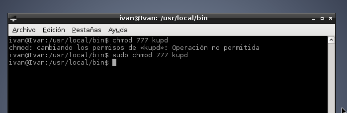

- Módulo: Administración de Sistemas Operativos
- Título del trabajo Crear un servicio
- Componentes del grupo: Iván José Hernández Regalado
- Curso Académico: 2014/2015
- Fecha de entrega: 24 de Noviembre de 2014
Primero instalamos el programa ruby porque nuestro script será de este programa.
Ahora vamos a crear una carpeta llamada kup en "/etc" y dentro de ella un archivo vacío llamado kup.log.
Lo siguiente es crear el script, lo llamamos kupd y lo creamos en "/usr/local/bin" con el siguiente contenido. Además darle permisos de ejecución.

Para llamar al servicio solo tenemos que escribir la ruta del script ("/usr/local/bin/kupd") y comprobamos que el servicio se añade al kup.log.
Paramos el servicio eliminando el archivo running de la carpeta "/etc/kup".
Ahora vamos a controlar el servicio al estilo de System V. Para ello creamos un script llamado kup en la carpeta "/etc/init.d" con el siguiente contenido y le damos permisos de ejecución. Comprobamos con los comandos de System V que el servicio se inicia, se para y que podemos ver su estado.

Lo siguiente es conseguir que el servicio se inicie durante el inicio del sistema para ello debemos añadir las siguientes lineas al script de System V (la linea de Default Start especifica a que runlevels se va ha añadir el servicio).
Luego con el comando innserv y gracias a las lineas añadidas anteriormente al script nuestro servicio se enlazará en la carpeta "/etc/rc2.d" que es donde se inician los servicios junto con el sistema.
Reiniciamos el sistema y comprobamos que el servicio está iniciado.
Para eliminar que el servicio se inicie durante el arranque del sistema ejecutamos el siguiente comando "innserv -r nombredelservicio" para comprobarlo reiniciamos la máquina y vemos los servicios en ejecución.
Creamos el siguiente script llamado kup2.conf en "/etc/init" que es la ruta que usan los servicio por upstart (la linea de start on runlevel [2345] especifica a que runlevels se va ha añadir el servicio).
Para controlar el servicio solo tenemos que usar el comando "service kup2 (status | start | stop)" eligiendo la opción que queramos (si el comando no funciona tienen que instalar el paquete upstart).